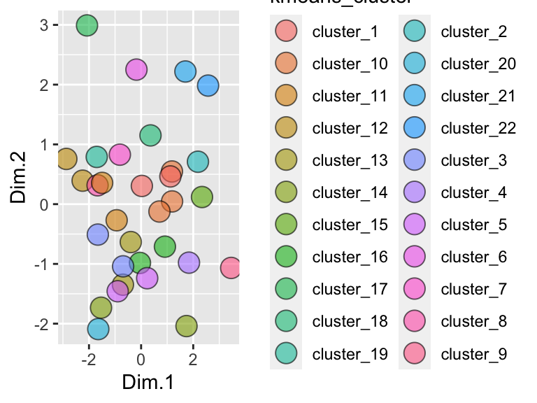
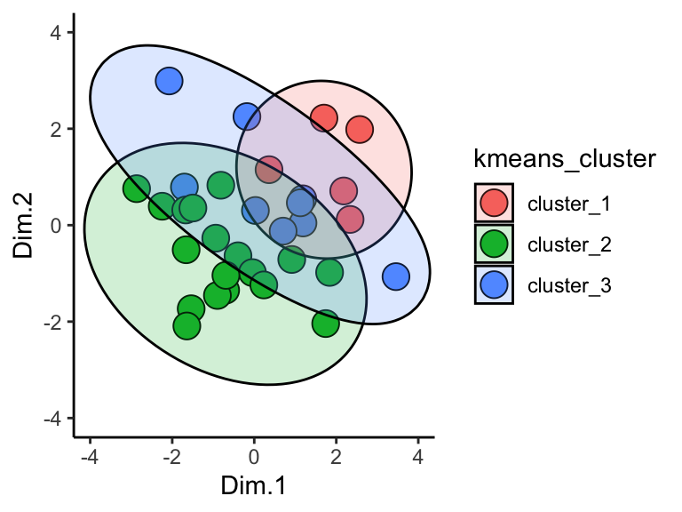
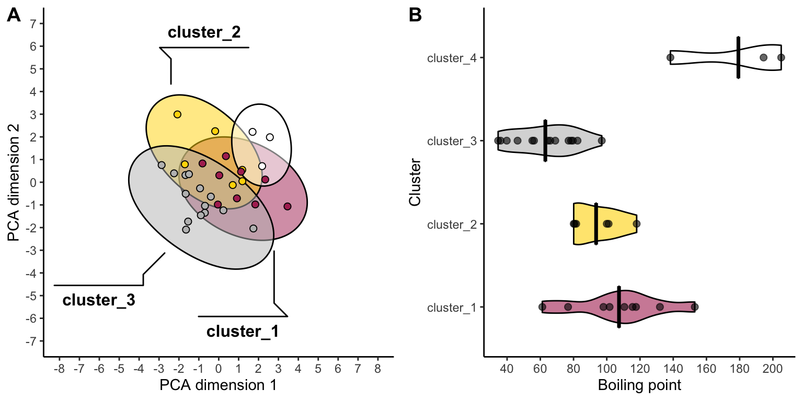

8 k-means
“Do my samples fall into definable clusters?”
8.1 theory
One of the questions we’ve been asking is “which of my samples are most closely related?”. We’ve been answering that question using clustering. However, now that we know how to run principal components analyses, we can use another approach. This alternative approach is called k-means, and can help us decide how to assign our data into clusters. It is generally desirable to have a small number of clusters, however, this must be balanced by not having the variance within each cluster be too big. To strike this balance point, the elbow method is used. For it, we must first determine the maximum within-group variance at each possible number of clusters. An illustration of this is shown in A below:

One we know within-group variances, we find the “elbow” point - the point with minimum angle theta - thus picking the outcome with a good balance of cluster number and within-cluster variance (illustrated above in B and C.)
Let’s try k-means using runMatrixAnalysis. We can use it in conjunction with analysis = "pca" or analysis = "hclust". Let’s do PCA first. To include k-means, we can just set kmeans = "auto". It’s important to note that kmeans cannot handle NAs. We must set something for the na_replacement argument. One solution is to ignore variables that have NAs for some values, which can be done by setting na_replacement = "drop".
With kmeans = "auto" and na_replacement = "drop", we can now run our analyssis. The output now has an additional column called kmeans_cluster, which indicates what cluster each sample is in:
solvents_pca_kmeans <- runMatrixAnalysis(
data = solvents,
analysis = c("pca"),
column_w_names_of_multiple_analytes = NULL,
column_w_values_for_multiple_analytes = NULL,
columns_w_values_for_single_analyte = colnames(solvents)[c(3:5, 7:9, 11:12)],
columns_w_additional_analyte_info = NULL,
columns_w_sample_ID_info = c("solvent", "formula", "miscible_with_water", "CAS_number", "category"),
transpose = FALSE,
kmeans = "auto",
na_replacement = "drop"
)
## Analytes are all numeric and compatible with the analysis selected.
## Dropping any variables in your dataset that have NA as a value.
## Variables dropped:
## solubility_in_water vapor_pressure
solvents_pca_kmeans
## # A tibble: 32 × 15
## sample_unique_ID solvent formula miscible_with_w… CAS_number category Dim.1
## <chr> <chr> <chr> <lgl> <chr> <chr> <dbl>
## 1 acetic_acid_C2H4… acetic… C2H4O2 TRUE 64-19-7 oxygen_… -0.178
## 2 acetone_C3H6O_TR… acetone C3H6O TRUE 67-64-1 oxygen_… -1.66
## 3 acetonitrile_C2H… aceton… C2H3N TRUE 75-05-8 nitroge… -1.70
## 4 benzene_C6H6_FAL… benzene C6H6 FALSE 71-43-2 hydroca… 1.19
## 5 benzonitrile_C7H… benzon… C7H5N FALSE 100-47-0 nitroge… 2.57
## 6 1-butanol_C4H10O… 1-buta… C4H10O FALSE 71-36-3 alcohol -0.815
## 7 2-butanone_C4H8O… 2-buta… C4H8O FALSE 78-93-3 oxygen_… -0.938
## 8 carbon_disulfide… carbon… CS2 FALSE 75-15-0 sulfide 1.74
## 9 carbon_tetrachlo… carbon… CCl4 FALSE 56-23-5 chlorin… 3.46
## 10 chlorobenzene_C6… chloro… C6H5Cl FALSE 108-90-7 chlorin… 2.34
## # … with 22 more rows, and 8 more variables: Dim.2 <dbl>, kmeans_cluster <chr>,
## # boiling_point <dbl>, melting_point <dbl>, density <dbl>,
## # relative_polarity <dbl>, formula_weight <dbl>, refractive_index <dbl>We can plot the results and color them according to the group that kmeans suggested:
ggplot(solvents_pca_kmeans) +
geom_point(aes(x = Dim.1, y = Dim.2, fill = kmeans_cluster), shape = 21, size = 5, alpha = 0.6)
Hmmm, it looks like the elbow algorithm is suggesting lots of clusters. Why is this? Let’s look at the elbow plot itself. For this, we can just set kmeans = "elbow":
solvents_pca_kmeans_elbow <- runMatrixAnalysis(
data = solvents,
analysis = c("pca"),
column_w_names_of_multiple_analytes = NULL,
column_w_values_for_multiple_analytes = NULL,
columns_w_values_for_single_analyte = colnames(solvents)[c(3:5, 7:9, 11:12)],
columns_w_additional_analyte_info = NULL,
columns_w_sample_ID_info = c("solvent", "formula", "miscible_with_water", "CAS_number", "category"),
transpose = FALSE,
kmeans = "elbow",
na_replacement = "drop"
)
## Analytes are all numeric and compatible with the analysis selected.
## Dropping any variables in your dataset that have NA as a value.
## Variables dropped:
## solubility_in_water vapor_pressure
solvents_pca_kmeans_elbow
## # A tibble: 31 × 2
## cluster_number variance_within_cluster
## <dbl> <dbl>
## 1 1 142804.
## 2 2 67355.
## 3 3 49545.
## 4 4 38964.
## 5 5 30702.
## 6 6 25646.
## 7 7 20188.
## 8 8 16508.
## 9 9 14428.
## 10 10 12265.
## # … with 21 more rowsThis gives us the maximum variance within a cluster for each number of clusters. Let’s plot that:
ggplot(
solvents_pca_kmeans_elbow,
aes(x = cluster_number, y = variance_within_cluster)
) +
geom_col() +
geom_point() +
geom_line()Hmm, it looks like there aren’t any strong elbows in this plot - probably the reason that the elbow method chooses such a high number of clusters. Suppose we want to manually set the number of clusters? We can set kmeans = 3 if we want three clusters in the output. Below, let’s do just that. Let’s also plot the results and use geom_mark_ellipse.
runMatrixAnalysis(
data = solvents,
analysis = c("pca"),
column_w_names_of_multiple_analytes = NULL,
column_w_values_for_multiple_analytes = NULL,
columns_w_values_for_single_analyte = colnames(solvents)[c(3:5, 7:9, 11:12)],
columns_w_additional_analyte_info = NULL,
columns_w_sample_ID_info = c("solvent", "formula", "miscible_with_water", "CAS_number", "category"),
transpose = FALSE,
kmeans = 3,
na_replacement = "drop"
) %>%
ggplot(aes(x = Dim.1, y = Dim.2, fill = kmeans_cluster)) +
geom_point(shape = 21, size = 5) +
geom_mark_ellipse(aes(label = kmeans_cluster), alpha = 0.2) +
theme_classic() +
coord_cartesian(xlim = c(-4,4), ylim = c(-4,4))
## Analytes are all numeric and compatible with the analysis selected.
## Dropping any variables in your dataset that have NA as a value.
## Variables dropped:
## solubility_in_water vapor_pressure
Cool!
One more important point: when using kmeans, the output of runMatrixAnalysis (specifically the kmeans_cluster column) can be used to create groupings for summary statistics. For example, suppose we want two groups of solvents and we want to calculate the mean and standard deviation in boiling points for each of those groups:
solvents_clustered <- runMatrixAnalysis(
data = solvents,
analysis = c("pca"),
column_w_names_of_multiple_analytes = NULL,
column_w_values_for_multiple_analytes = NULL,
columns_w_values_for_single_analyte = colnames(solvents)[c(3:5, 7:9, 11:12)],
columns_w_additional_analyte_info = NULL,
columns_w_sample_ID_info = c("solvent", "formula", "miscible_with_water", "CAS_number", "category"),
transpose = FALSE,
kmeans = 2,
na_replacement = "drop"
)
## Analytes are all numeric and compatible with the analysis selected.
## Dropping any variables in your dataset that have NA as a value.
## Variables dropped:
## solubility_in_water vapor_pressure
solvents_clustered_summary <- solvents_clustered %>%
group_by(kmeans_cluster) %>%
summarize(mean_bp = mean(boiling_point))
ggplot() +
geom_col(
data = solvents_clustered_summary,
aes(x = kmeans_cluster, y = mean_bp),
color = "black", fill = "white"
) +
geom_point(
data = solvents_clustered,
aes(x = kmeans_cluster, y = boiling_point)
)Very good! Since we can use the outputs of our k-means analyses to run and visualize summary statistics, it’s possible that we’ll want to see the cluster plot (dendrogram or pca plot) alongside the summary stats plot. For this we can use the plot_grid function from the cowplot package. Let’s check it out:
solvents_clustered <- runMatrixAnalysis(
data = solvents,
analysis = c("pca"),
column_w_names_of_multiple_analytes = NULL,
column_w_values_for_multiple_analytes = NULL,
columns_w_values_for_single_analyte = colnames(solvents)[c(3:5, 7:9, 11:12)],
columns_w_additional_analyte_info = NULL,
columns_w_sample_ID_info = c("solvent", "formula", "miscible_with_water", "CAS_number", "category"),
transpose = FALSE,
kmeans = 4,
na_replacement = "drop"
)
## Analytes are all numeric and compatible with the analysis selected.
## Dropping any variables in your dataset that have NA as a value.
## Variables dropped:
## solubility_in_water vapor_pressure
colors <- c("maroon", "gold", "grey", "white")
pca_plot <- ggplot( data = solvents_clustered, aes(x = Dim.1, y = Dim.2, fill = kmeans_cluster) ) +
geom_mark_ellipse(
aes(label = kmeans_cluster),
alpha = 0.5, label.lineheight = 0.2, size = 0.5) +
geom_point(shape = 21, size = 2) +
theme_classic() +
guides(fill = "none") +
scale_x_continuous(name = "PCA dimension 1", breaks = seq(-8,8,1)) +
scale_y_continuous(name = "PCA dimension 2", breaks = seq(-7,7,1)) +
scale_fill_manual(values = colors) +
coord_cartesian(xlim = c(-8,8), ylim = c(-7,7))
solvents_clustered_summary <- solvents_clustered %>%
group_by(kmeans_cluster) %>%
summarize(mean_bp = mean(boiling_point))
bar_plot <- ggplot() +
geom_violin(
data = solvents_clustered,
aes(x = kmeans_cluster, y = boiling_point, fill = kmeans_cluster),
size = 0.5, color = "black", alpha = 0.6, width = 0.5
) +
geom_crossbar(
data = solvents_clustered_summary,
aes(x = kmeans_cluster, y = mean_bp, ymin = mean_bp, ymax = mean_bp),
color = "black", width = 0.5
) +
geom_point(
data = solvents_clustered,
aes(x = kmeans_cluster, y = boiling_point),
size = 2, color = "black", alpha = 0.6
) +
scale_y_continuous(name = "Boiling point", breaks = seq(0,250,20)) +
scale_x_discrete(name = "Cluster") +
scale_fill_manual(values = colors) +
theme_classic() +
coord_flip() +
guides(fill = "none") +
theme(legend.position = "bottom")
cowplot::plot_grid(pca_plot, bar_plot, align = "h", axis = "b", labels = "AUTO")
Now we are really rockin!!
8.2 exercises
Use the wine grapes dataset (it’s stored as wine_grape_data after you run the source(...) command).
8.2.1 Question 1
Run a principal components analysis on the dataset. Use na_replacement = "drop" (so that variables with NA values are not included in the analysis) and generate clusters automatically using kmeans by setting kmeans = "auto". Make scatter plot of the results. How many clusters does kmeans recommend?
8.2.2 Question 2
Modify your code from Question 1 so that only two clusters are generated. Plot the results. Use geom_mark_ellipse to highlight each cluster in your plot (note that the fill aesthetic is required to mark groups). Which varieties are put into each of the two clusters?
8.2.3 Question 3
Use an ordination plot to determine what chemicals makes Chardonnay so different from the other varieties. To what class of compounds do these chemical belong?
8.2.4 Question 4
Modify your code from Question 2 so that five clusters are generated. Plot the results. Use geom_mark_ellipse to highlight each cluster in your plot (note that the fill aesthetic is required to mark groups). Based on this plot, which grape variety undergoes the least amount of change, chemically speaking, between dry and well-watered conditions?
8.2.5 Question 5
Run a heirarchical clustering analysis on the wine grapes data set, using kmeans to create five groups, and also continue using na_replacement = "drop". Plot the results. Which grape variety undergoes the most change in terms of its chemistry between well-watered and dry conditions? (hint: remember that the x-axis shows the distances between nodes and tips, the y-axis is meaningless). Compare the method you used to compare sample shifts in question 4 (i.e. pca+kmeans) versus the method you used in this question (i.e. hclust+kmeans). Which do you is better? Would this change depending on the circumstances?
8.2.6 Question 6
Google “Quercetin”. What kind of compound is it? Use the clusters created by the heirarchical clustering analysis in question 5 as groups for which to calculate summary statistics. Calculate the mean and standard deviation of the concentration of Quercetin in each group. Plot the result using geom_pointrange and adjust axis font sizes so that they are in good proportion with the size of the plot. Also specify a theme (for example, theme_classic()).
Does one cluster have a large amount of variation in Quercetin abundance? Why do you think this might be?
8.2.7 Question 7
Use cowplot::plot_grid to display your plots from questions 4 and 5 next to each other.
8.2.8 Challenge (optional)
Use cowplot to display your plots from questions 4, 5, and 6 alongside each other. Make your combined plot as attractive as possible! Use each of the following:
align = TRUE inside geom_tiplab()
nrow = 1 inside plot_grid()
rel_widths = <your_choice> inside plot_grid()
name = <your_choice> inside scale_*_*
label = kmeans_cluster inside geom_mark_ellipse()
breaks = <your_choice> inside scale_x_continuous() or scale_y_continuous() (as an example, breaks = seq(0,10,1))
Also, consider using:
guides(fill = "none", color = "none")
Install the RColorBrewer package, and use one of its color schemes. As an example with the color scheme Set1:
scale_fill_brewer(palette = "Set1", na.value = "grey")
scale_color_brewer(palette = "Set1", na.value = "grey")
Save your plot as a png using ggsave().
Maybe something like this: